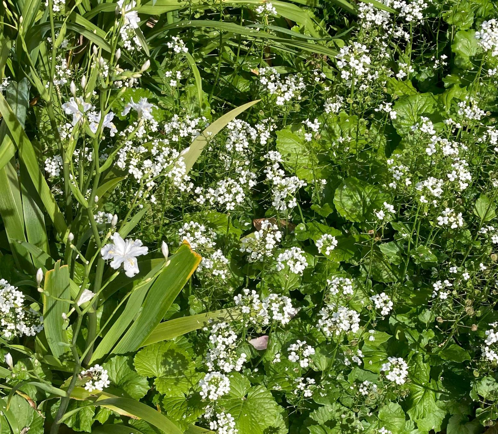
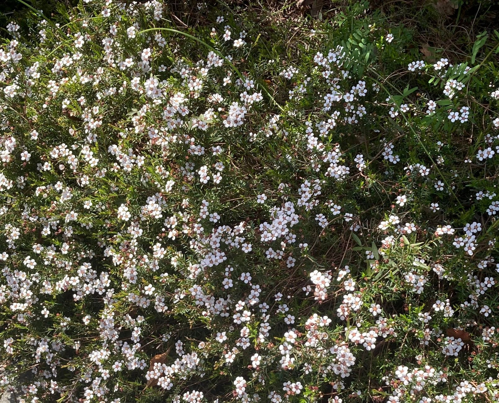

Bruny Island is a strange island off the coast of mainland Hobart. After making my way to the island by
swimming across the channel (there are boats too for the less adventurous!), I
noticed that the middle of it was very thin. After talking to some local people, I discovered that this
part of the island is called the 'Neck' as it is so thin. The people I spoke to suggested I check out
some of the native plants and I was not disappointed!
Groundy
The first type of plants that I discovered were all growing along the ground. So, I have named these
types of plants, Groundy. I observed that these plants had this vibrant green colour with little
white flowers. I am unsure if this is because of their closeness to the ground. There are plenty of
these plants at the Neck so I would definitely visit again!

Bushy
The second category of plants in this location were mostly in the shape of a bush. So, I have named
these types of plants, Bushy. I found that these plants seemed to have a darker colour in
the leaves than the
Groundy plants. However, the size of the flowers were very similar. I love these plants, I wish I could take them home!
